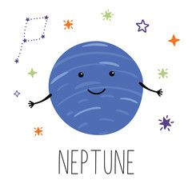

Всем здравствуйте!
Я восьмая и самая дальняя от Солнца планета. Я назван в честь римского бога морей благодаря яркому синему цвету своей атмосферы. Я первая планета, обнаруженная благодаря математическим расчётам, а не прямому наблюдению. Астрономы предположили мое существование, изучая орбиты Урана. Я же был обнаружен в 1846 году.
Мое строение очень похоже на строение Урана. Внутри находится ядро массой чуть больше массы Земли, состоящее из железа, никеля и силикатов. Ядро окружено мантией из очень горячей смеси воды, аммиака и метана. Верхний слой составляет водородно-гелиевая атмосфера. Главное различие между мной и Ураном - климат. На Уране атмосфера малоподвижная, а на мне ветры дуют с почти сверхзвуковой скоростью - до 600 м/с.
Моя атмосфера состоит из водорода, гелия и примесей других газов. Синий цвет мне продают примеси метана, который поглощает волны красного света.
Я удалён от Солнца на 4,5 млрд км, это в 30 раз дальше, чем Земля. Планета совершает полный оборот по орбите почти за 165 земных лет. С тех пор, как меня открыли, у меня только-только прошел один год. Сутки здесь длятся 16 земных часов.
Известно 14 моих спутников, крупнейшим из которых является Тритон. Это единственный крупный спутник в Солнечной системе, который движется в направлении, обратном вращению своей планеты.
Как и у других планет гигантов, у меня есть система колец, но не таких обширных, как у Сатурна. Предположительно, кольца состоят из частиц льда в смеси с соединениями углерода, которые придают им красноватый оттенок.
Нептун
- Пол: Женский
- Возраст: 4.5 биллионов лет
- Спутник: Есть (14 шт.)
- Способности: Гидрокинез(манипуляция жидкостями), криокинез(способность замораживать)
- Качества: Гордая, суетливая, саркастичная, перфекционист
- Любимые цвета: Холодные оттенки